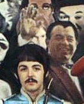

Paul is Dead
Cass Python, 2016-07-15For as long as I can remember, I have always loved The Beatles, the first song that I heard from them was Day Tripper, but you're not here to read about my love for the band, you're here to learn about the Paul is Dead conspiracy. So with no more messing around, let's get right into it...
Right now is where I tell you the back story of how Paul "died", however, I found two stories about the car crash.
- Story I. On 7th of January 1967 the car of Paul McCartney was in a car crash, however, Paul was not in the car at all, he was really at a party in Sussex. The driver was bringing drugs to the party.
- Story II. An argument took place between McCartney and the other Beatles at Abbey Road Studios on 9th of November of 1966. Paul stormed out of the building and went in his car and sped off into the night. In his anger, he failed to notice the traffic light change and he spun out of control, smashing into a light pole and being decapitated. (He blew his mind out in a car. He didn't notice that the lights had changed. A crowd of people stood and stared. They'd seen his face before).
The band soon hired William Stuart Campbell, who supposedly once won a McCartney look-alike contest.
There are some Notable Campbell's born around the same time as Paul McCartney (1942).
- Bill Campbell, American mayor, born 1953-
- William Campbell, American businessman and chairman, 1940-2016
- William L. "Bill" Campbell, film editor, 1946-2005
- William Bennett Campbell, Canadian politician, 1943-2008
- William "Junior" Campbell, Scottish composer, 1947-
- Billy Campbell, footballer for Sunderland, Dundee, Motherwell and more, 1944-
On the 17th of September of '69 student newspaper of Drake University in Iowa (the Drake Times-Delphic) published an article claiming that there were clues that Paul was dead and that you could find them in Beatle music and artwork.
Some of the "clues" are...
- On Sgt. Pepper's Lonely Hearts Club Band album cover Paul is seen with a man (Issy Bonn) holding his hand above his head. In some religions this means that the person is dead and that Paul is dead. Or he could just be waving.

- On the cover of Sgt. Pepper's it shows wax Beatles (by Peter Blake and Jann Haworth) looking down at the flower arrangement. This could be seen as mourning the death of someone, however, wax George Harrison seems to be grinning, weird thing to if your mourning a death.
- On the incover of Sgt. Pepper's it shows the Beatles sitting down. On Paul's left (our right) the letters "O.P.D." are on his uniform. Some say that this means (calling back to my own work) Officially Pronounced Dead
On the 7th of November 1969, Life Magazine interview McCartney and he explained, "It is all bloody stupid. I picked up that OPD badge in Canada. It was a police badge. Perhaps it means Ontario Police Department or something." The patch which is slightly bent in the photo actually reads O.P.P. not O.P.D. as the bottom of the "P" is not visible. It really means "Ontario Provincial Police"
There are many more "clues" that Paul is dead, but there is no time to tell them all.
What I don't get is why would The Beatles leave "clues" on their work, if they were trying to hide that Paul was dead, why would they leave "clues"?
Also, when John was killed, why did they not kill off the fake Paul? The Beatles were over.
How could they get a man who looks, talks, sings, walks etc like the real Paul?
Oh wait, I know!
Because Paul never died in the 20th century.